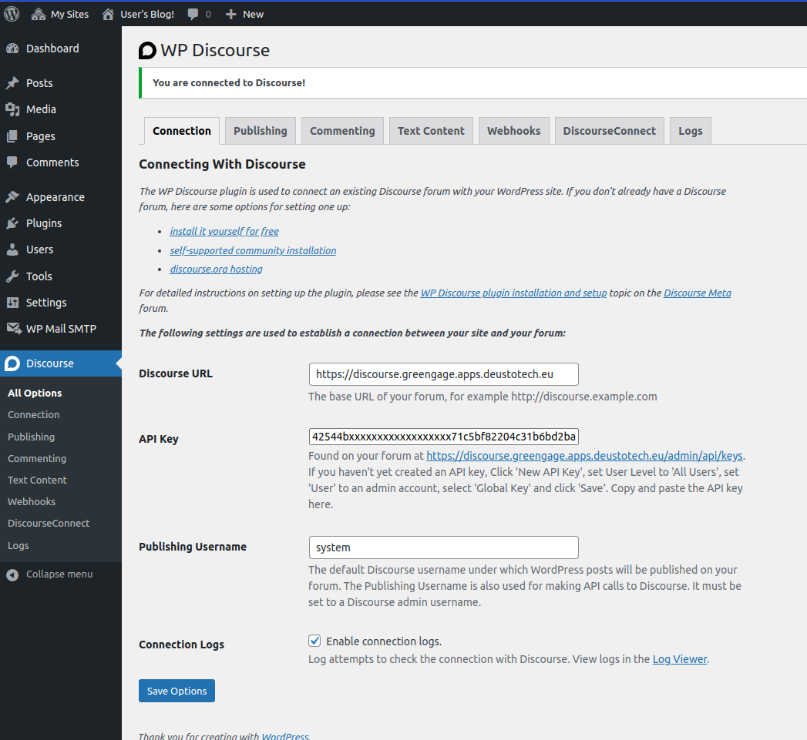
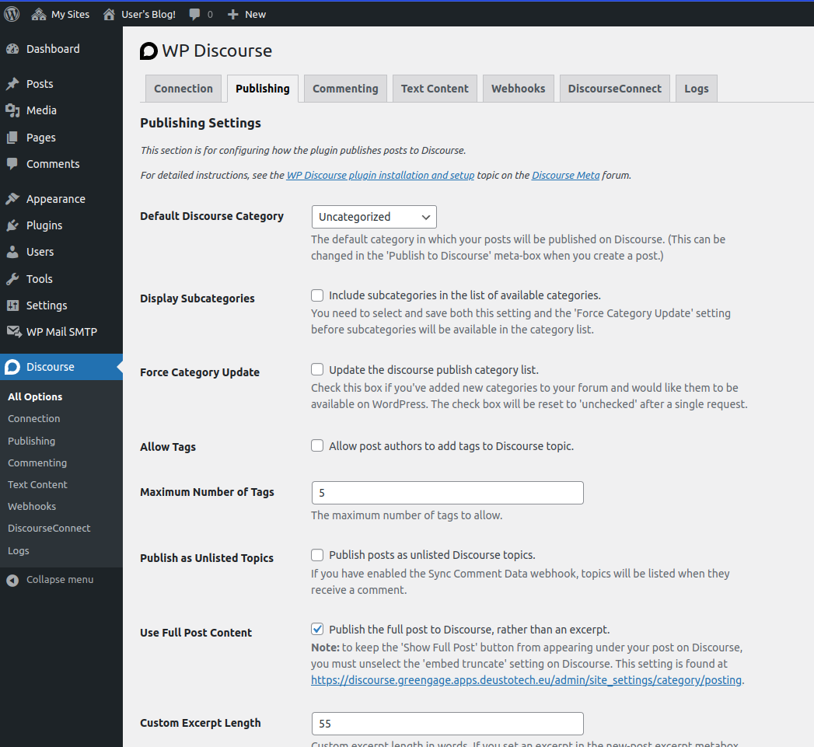
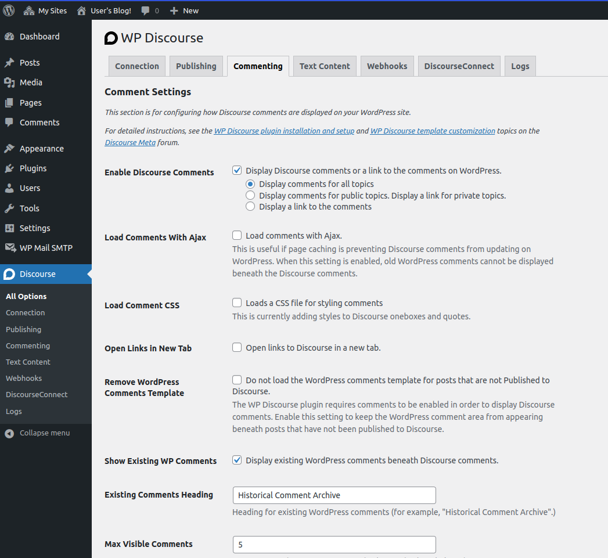

Integration
WordPress + Keycloak Integration
Introduction
Integrating Keycloak with WordPress enhances security by implementing Single Sign-On (SSO). This integration allows users to access WordPress using Keycloak credentials, streamlining the login process and improving security.
Step 1: Integrating Keycloak in WordPress
- Access WordPress Admin: Log into wp-admin in WordPress using credentials defined in
docker-compose(WORDPRESS_EMAIL,WORDPRESS_PASSWORD). - Install OAuth SSO Plugin: Go to 'Plugins' > 'Add New'. Search for "OAuth Single Sign On – SSO (OAuth Client)" and click on "Install Now".
- Activate and Configure: After installation, click "Activate". You’ll be redirected to the configuration page. Follow the steps in the "Setup Wizard".
For more details on Keycloak integration, visit the Keycloak WordPress Integration Documentation.
Step 2: Configuring Keycloak with WordPress
- Ensure you have a
clientidandsecretfrom Keycloak. - Follow the instructions provided in the setup wizard to integrate these credentials into WordPress.
WordPress + Discourse Integration
Introduction
Integrating Discourse with WordPress allows seamless connectivity between WordPress posts and Discourse discussions. This integration enhances community engagement by linking WordPress content with Discourse forums.
Step 1: Setting Up API Key in Discourse
- Admin Access: Log into Discourse as an admin.
- Create API Key: Navigate to
/admin/api/keys. Create an API Key (User Level: "All Users", Scope: "Global") and save it for later use in WordPress.
Step 2: Integrating Discourse in WordPress
- Access WordPress Admin: Log into wp-admin using
docker-composecredentials (WORDPRESS_EMAIL,WORDPRESS_PASSWORD). - Install WP Discourse Plugin: Go to 'Plugins' > 'Add New'. Search for "WP Discourse" and click "Install Now".
- Activate and Configure: After installation, click "Activate". A "Discourse" option will appear in the sidebar.
-
Configure Plugin Settings:
-
In the "Connection" section - Set the 'Discourse URL'. - Use the API Key created in Discourse. - Define the "Publishing Username" 
- In the "Publishing" section, enable the following options - "Default Discourse Category" - "Use Full Post Content" - "Auto Publish" - "Send Email Notification on Publish Failure" - (Optional) Set "Email Address for Failure Notification" - "Auto Track Published Topics" 
- In the "Commenting" tab, enable the following - [IMPORTANT] "Enable Discourse Comments" - "Show Existing WP Comments" 
- In the "Webhook" tab, enable "Sync Comment Data".
For more information on configuring the WP Discourse plugin, visit the Discourse WordPress Plugin Guide.
Important Notes:
- Ensure to securely store and manage your API keys and credentials.
- Regularly update your integration plugins to maintain security and functionality.
- In case of any security concerns or compromised credentials, contact the respective support teams immediately.